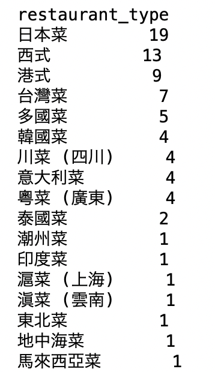

Assignment #2: Restaurants in Tsuen Wan
Assignment #2: Restaurants in Tsuen Wan
For Assignment#2, we are collecting information about restaurants in Hong Kong on OpenRice and making related analysis using ParseHub, OpenRefine, SQLite and Pandas Data Frame. The area that I selected was Tsuen Wan.
To read my assignment journal, please click here
( 1 ) To have an overview of the type and price of all the restaurants in Tsuen Wan, Japanese food takes the dominate position, with 19 Japanese restaurants out of all the 78 restaurants.
In terms of the price range, this area makes a good choice for students, because most of its restaurants fall in the price range of 51-100HKD/person and 101-200HKD/person.

( 2 ) Now let's move on to see people's evaluation on these restaurants.
Normally, when trying to compare different restaurants, I will rank them by their rating. But since OpenRice doesn't apply a very precise rating system (its system uses 0.5🌟/level instead of 0.1🌟/level), I decided to go with "like" and made the following Top 10 ranking for most likes(left) / dislikes(right).
However, we may locate restaurants such as "初見Shoken" and "Olive Cafe" that appear on both "Most Likes" and "Most Dislikes". In this case, it becomes hard for us to identify whether it's a wise choice or not to eat there.
To deal with such dilemma, I tried to introduce a new criteria of "Likes Rate", which stands for "number of likes/total number of likes and dislikes". High "Likes Rate" indicates that a restaurant has a good and relatively stable performance.
With "Likes Rate" taken into consideration, if I want a restaurant (1) reviewed by many users; (2) with high "Likes Rate", I may choose from "蝦蝦燒Cooking Haha" "18樓雞煲火鍋專門店" and "鳥山名Toriyamana". Since I prefer Japanese food personally, "鳥山名Toriyamana" will probably be my final choice.
p.s. I also did a ranking exclusively for all Japanese Food in Tsuen Wan applying the same method. According to the result, "鳥山名Toriyamana""友拉麵""牛極 (大河道) Gyuugoku Stone Grill Steak (Tai Ho Road)""Ikigai Concepts" and "初見Shoken" will be the five choices that I recommend with relatively good performance in popularity and like rate.